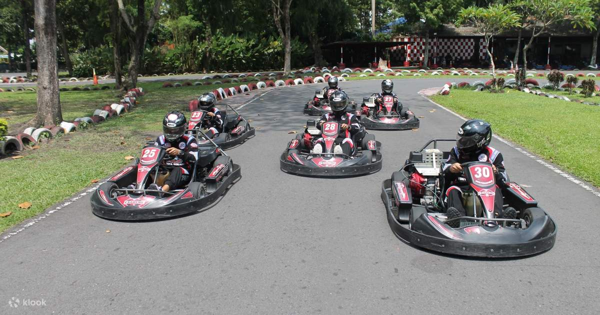

GoKart
Lokasi : Wonosari St No.km 10, Asem Ngecis, Sitimulyo, Piyungan, Bantul Regency, Special Region of Yogyakarta 55792
Harga Tiket : Rp 65.000 - Rp 115.000
Maps
Fun World
Lokasi : Hartono Mall, Jl. Ring Road Utara, Kaliwaru, Condongcatur, Depok, Sleman Regency, Special Region of Yogyakarta 55281
Harga Tiket : Free
Maps
Sindu Kusuma Edupark
Lokasi : Jl. Jambon, Kragilan, Sinduadi, Kec. Mlati, Kabupaten Sleman, Daerah Istimewa Yogyakarta 55284
Harga Tiket : Rp 25.000 - Rp 60.000
Maps
Taman Pelangi
Lokasi : Jl. Ring Road Utara, Jongkang, Sariharjo, Kec. Ngaglik, Kabupaten Sleman, Daerah Istimewa Yogyakarta 55284
Harga Tiket : Rp 15.000 - Rp 20.000
Maps
Taman Pintar
Lokasi : Jl. Panembahan Senopati No.1-3, Ngupasan, Kec. Gondomanan, Kota Yogyakarta, Daerah Istimewa Yogyakarta 55122
Harga Tiket : Rp 3.000 - Rp 45.000
Maps
Kids Fun Parcs Yogyakarta
Lokasi : Jl. Wonosari No.KM 10, Asem Ngecis, Sitimulyo, Kec. Piyungan, Kabupaten Bantul, Daerah Istimewa Yogyakarta 55792
Harga Tiket : Rp 25.000 - Rp 120.000
Maps